— DATA STRUCTURE / 04
第四章 队列
先进先出。真正容易错的是循环队列的下标取模，以及队空、队满的判定方式。
01 / SECTION
顺序队列的介绍及C/C++代码实现
- 一句话定义：队列是先进先出（FIFO）的数据结构。
- 严格定义：只允许在一端（队尾 rear）插入、另一端（队头 front）删除的线性结构，禁止直接访问两端以外的数据。
- 直观理解：像两端相通的水管，一端放球、另一端取球，先放进去的最先取出。
- 与链表的关系：只允许在表尾插入、表头删除的单链表，就是队列。
- 队列家族：顺序队列、循环队列，以及后续 STL 章中的优先队列，均由基本队列衍生。
- 队列通常用链式实现（不像栈那样容易用数组模拟，因为两端都在动）。
- 结构设计：结点同样是 data + next；队列结构体只存两个指针：
cpp
typedef struct node { int data; struct node *next; } node;
typedef struct queue { node *front; node *rear; } queue; // 头指针 / 尾指针- 初始化分两级：
init_node()申请结点空间（失败 exit）；init_queue()申请队列空间，并把front = rear = NULL表示空队列。 - 判空：
q->front == NULL即为空；可直接return q->front == NULL;一行搞定（注意原文注释写反，返回 1 表示“空”更符合语义）。
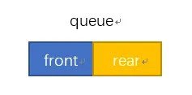
02 / SECTION
顺序队列的基本操作（入队出队遍历）及C/C++代码实现
- 入队（push）：新建结点
n，n->next = NULL，采用尾插法；若队列为空，则front = rear = n；否则rear->next = n; rear = n; - 注意：入队只动 rear，出队只动 front，这正是队列“两头分工”的本质。
- 出队（pop）：先判空再操作，分两种情况：
- 只有一个元素（
front == rear）：front = rear = NULL; free(n); - 多于一个元素：
front = front->next; free(n); - 遍历/打印：从
front出发沿 next 走到 NULL，即从队头到队尾顺序输出（与栈的逆序相反）。 - 遍历可变形为统计元素个数：设
cnt计数器边走边加，或直接把 count 存进结构体，避免每次都遍历。 - 完整实现包含：init_node、init_queue、empty、push、pop、print_queue，再加 main 做“入队 6 个 → 出队 5 个”的验证。
- 应用：BFS 广度优先搜索、图论算法几乎都离不开队列；练手题 1895。
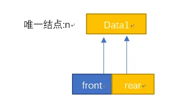
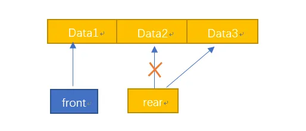
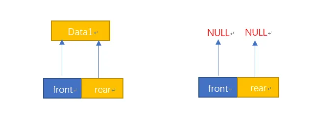
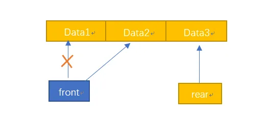
03 / SECTION
循环队列及假溢出的现象图文详解
- 假溢出现象：顺序队列每次入队 rear 后移、出队 front 后移，可用空间不断向后偏移，最终 rear 越界——存储区明明没满，却“溢出”了。
- 举例：容量 5 的队列先放 4 个元素，再出队 2 个，然后入队 2 个，rear 就跑到可操作范围之外，这就是假溢出。
- 动态链表队列同样有隐患：出队释放的空间无法复用，指针仍一路向后，直到撞上进程内存上界被迫终止，频繁队列操作时很致命。
- 循环队列：预先给定容量，rear 到末尾后回绕到开头继续用，实现空间重复利用。
- 环形只是逻辑上的环，物理上仍是线性数组；结构设计（用数组模拟，不用链式，否则无法确定何时回到队头）：
cpp
#define maxsize 10
typedef struct cir_queue {
int data[maxsize];
int rear; // 入队时移动
int front; // 出队时移动
} cir_queue;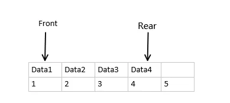
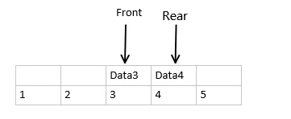
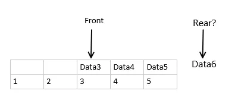
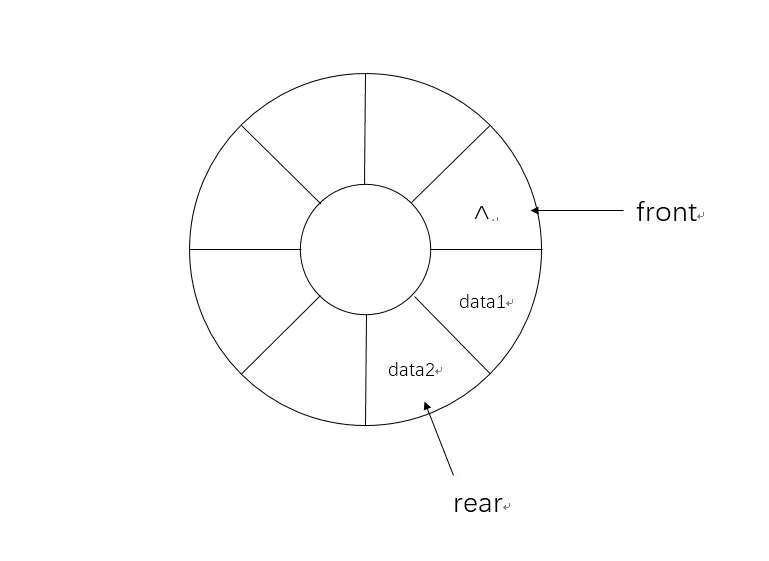
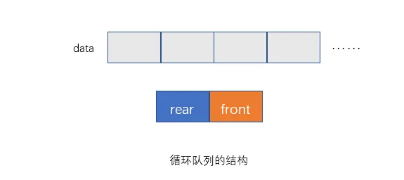
04 / SECTION
循环队列的基本操作及C语言代码实现
- 初始化：malloc 空间，
front = rear = 0（第 0 个位置作为空位/分界），必要时 memset 清零。 - 判空：
rear == front。 - 判满：
(rear + 1) % maxsize == front——即尾指针的下一个位置撞上队头。因此循环队列实际最多存 maxsize - 1 个元素，牺牲一格来区分空与满。 - 入队：先判满，满则输出溢出提示并返回；否则
rear = (rear + 1) % maxsize; data[rear] = x; - 出队：先判空，空则返回；否则清掉
data[front]，再front = (front + 1) % maxsize; - 遍历：用临时变量
i = front，while(i != rear){ i = (i+1) % maxsize; 输出 data[i]; } - 关键细节：移动指针必须用取余法
(x+1) % maxsize，不要写成rear++之类的自增，否则越界后直接崩溃。 - 验证套路：入队 6 个 → 打印 → 连续出队 3 次并每次打印，观察 front 回绕。
- 推荐练习：1895 题；可用普通队列题再练循环队列实现。
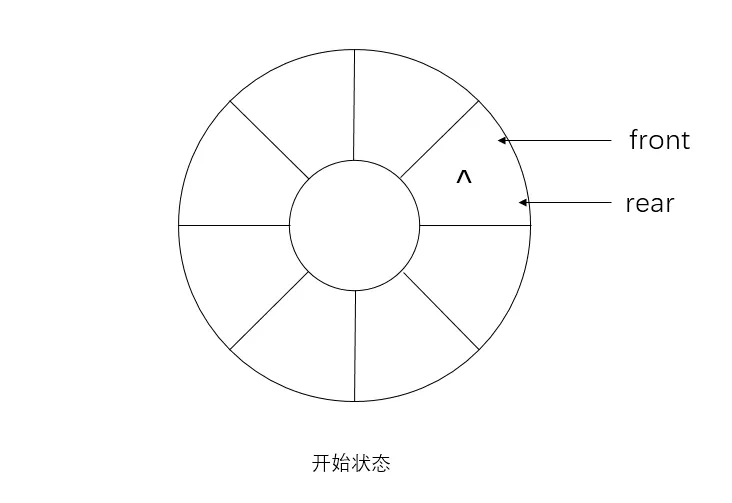
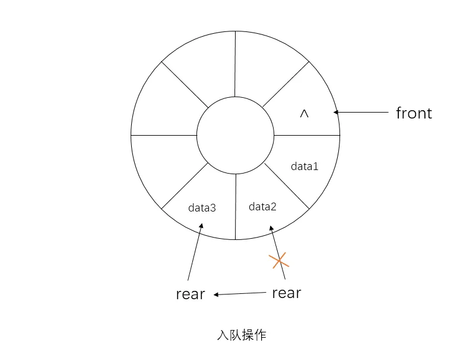
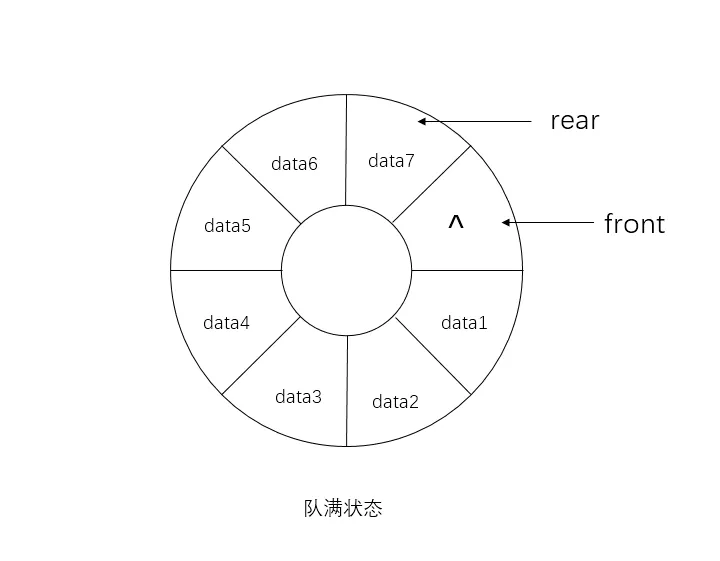
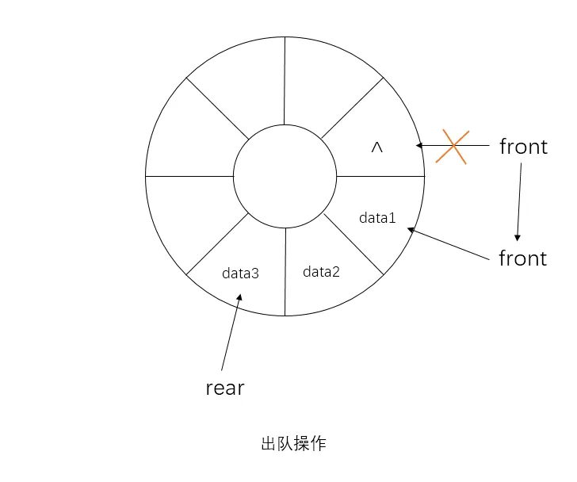